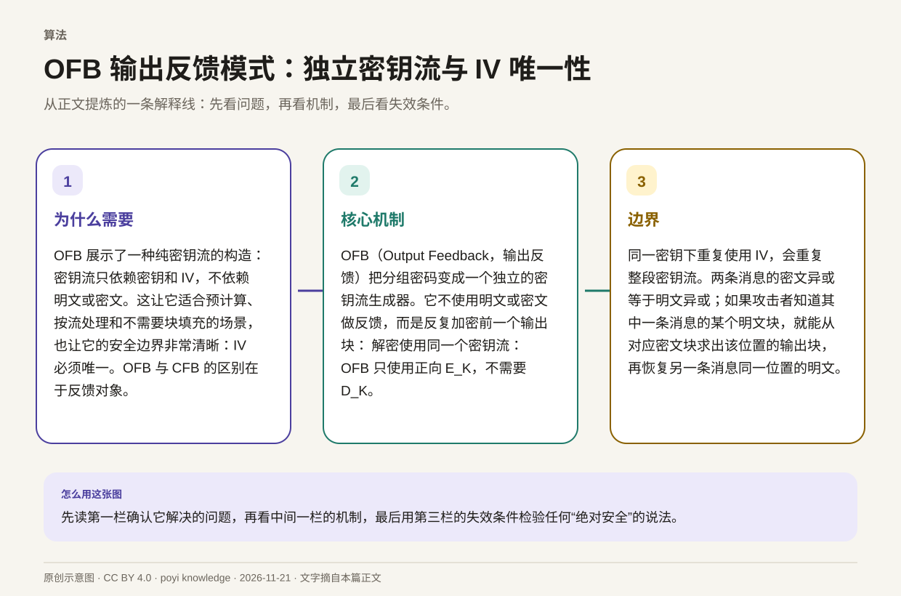
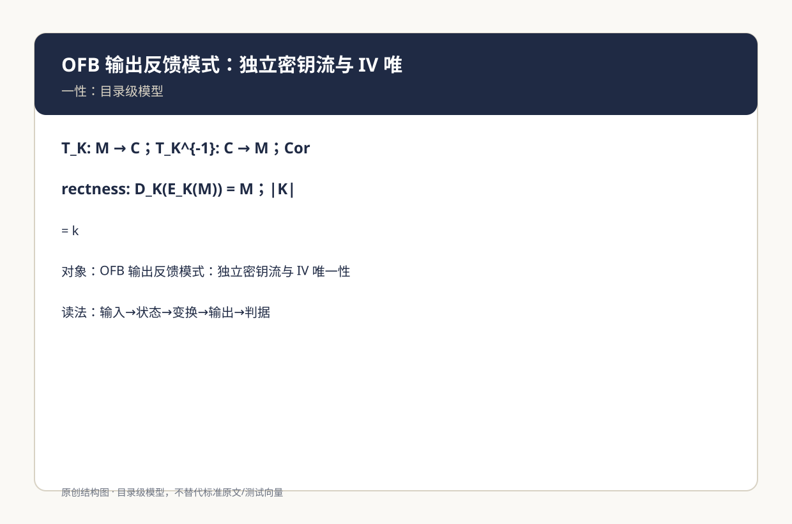

原理与机制
算法：OFB 输出反馈模式（Output Feedback）。OFB（Output Feedback，输出反馈）把分组密码变成一个独立的密钥流生成器。它不使用明文或密文做反馈，而是反复加密前一个输出块：
I_1 = IV
I_j = O_(j-1) (j >= 2)
O_j = E_K(I_j)
C_j = P_j xor O_j
P_j = C_j xor O_j
OFB 只使用正向 E_K，不需要 D_K。加密和解密是同一个异或操作；给定 IV 和密钥，密钥流与消息内容无关，因此可以在明文或密文到达之前预计算输出块。OFB 的 IV 必须是一个 nonce：在同一个密钥下，每次执行都必须唯一。标准没有要求 OFB 的 IV 像 CBC 的 IV 那样不可预测；它要求的是不重复。重复 IV 会让两条消息共享同一段密钥流，直接泄露明文异或关系。OFB 的输出块逐个依赖前一个输出块，因此正向 E_K 不能并行计算；但输出块可以在数据到达前串行预计算。OFB 允许最后一个块不满，使用输出块的前 u 位与部分明文异或，因此不需要块填充。OFB 不改变底层分组密码的块大小或密钥长度。

为什么重要
OFB 展示了一种纯密钥流的构造：密钥流只依赖密钥和 IV，不依赖明文或密文。这让它适合预计算、按流处理和不需要块填充的场景，也让它的安全边界非常清晰：IV 必须唯一。OFB 与 CFB 的区别在于反馈对象。CFB 反馈密文，因此密钥流依赖消息；OFB 反馈输出块，因此密钥流独立于消息。这个区别决定了错误传播、并行性和 IV 要求：OFB 没有密文反馈导致的错误传播，但 IV 重用会直接重复整段密钥流。理解 OFB 也有助于理解 CTR 和 AEAD：它们都把分组密码变成密钥流，但 CTR 用显式计数器，OFB 用置换迭代；CTR 可以随机访问，OFB 的密钥流必须按顺序生成。
应用与实例
OFB 是通用的机密性模式，适合需要流式处理、预计算密钥流或不希望做块填充的场景。SP 800-38A 面向联邦机构和非政府组织的敏感信息保护，OFB 是其中定义的模式之一。当密钥流可以在消息到达前生成时，OFB 适合对延迟敏感或数据到达不规则的场景；但预计算的前提是 IV 已经确定且唯一。把可以预计算误解为 IV 可以重复使用，会把 OFB 的优势变成灾难。OFB 不提供完整性。需要认证时，必须使用 AEAD 或外加 MAC；不能因为密钥流独立于消息就认为它具备抗篡改能力。

边界与攻击面
同一密钥下重复使用 IV，会重复整段密钥流。两条消息的密文异或等于明文异或；如果攻击者知道其中一条消息的某个明文块，就能从对应密文块求出该位置的输出块，再恢复另一条消息同一位置的明文。SP 800-38A 明确警告：重复 IV 会危及这些消息的机密性。### 输入块与 IV 的关系
OFB 的 IV 是第一个输入块。如果某个消息的 IV 恰好等于另一条消息在加密过程中产生的某个输入块，两条消息的密钥流会重叠，机密性同样可能受损。因此 IV 的唯一性不仅是不同消息的 IV 不同，还要避免与同一密钥下的其他输入块重合。### 无完整性
OFB 只提供机密性，不提供完整性。翻转密文的一个比特会翻转明文的同一比特，攻击者可以做受控修改；OFB 本身无法检测。### 不能并行生成密钥流
OFB 的输出块逐个依赖前一个输出块，正向 E_K 不能并行。它可以通过预计算隐藏延迟，但不能像 CTR 那样对任意块随机访问。本文教学实现只演示 AES-128-OFB 的官方向量、IV 重用关系和部分块处理。它不实现安全的 IV 生成、常量时间处理、密钥管理、协议状态机或侧信道防护，不能用于生产环境。
历史与背景
1980 年，FIPS 81 为 DES 定义了 OFB 模式，使分组密码可以生成独立于消息的密钥流。2001 年，SP 800-38A 把 OFB 推广到通用分组密码，并给出 AES 测试向量。OFB 的长期使用说明，密钥流独立于消息既是优点也是风险：它让预计算和流式处理成为可能，也让 IV 重用直接变成密钥流重用。后来的 CTR 用显式计数器强化了唯一性和随机访问，AEAD 则把完整性加入同一次操作。这段历史说明，OFB 是一个边界清晰的基础模式：正确生成唯一 IV、接受串行密钥流生成、另行提供完整性，它可以提供机密性；省略这些前提，就会把模式性质变成攻击面。
逐步示例与核验
复算示例
取标准或公开测试向量中的一组参数，按“输入—执行—输出”记录：先写出该条目的形式式 (C=E_K(P;r),\qquad P=D_K(C))；再按规范顺序执行每一步，最后把输出与独立实现或标准向量逐字节对照。若没有可引用的数值向量，就只记录结构步骤，不伪造输出。
参考出处
- Wikipedia search entry for OFB 输出反馈模式. https://zh.wikipedia.org/w/index.php?search=OFB%20%E8%BE%93%E5%87%BA%E5%8F%8D%E9%A6%88%E6%A8%A1%E5%BC%8F
- Handbook of Applied Cryptography (Menezes, van Oorschot, Vanstone). https://www.cacr.math.uwaterloo.ca/hac/